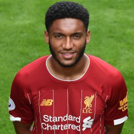
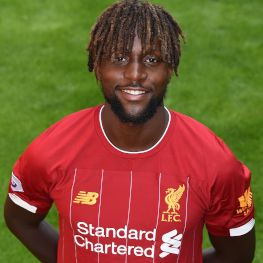

Name: Alisson Becker
Name: Alisson Becker DOB: 2nd October, 1992
Place of Birth: Novo Hamburgo, Brazil
Height: 6ft 3in
Position: GK
Jersey Number: 1
 Name: Adrian San Miguel Castillo
Name: Adrian San Miguel Castillo DOB: 3rd January, 1987
Place of Birth: Seville, Spain
Height: 6ft 3in
Position: GK
Jersey Number: 13
 Name: Caoimhin Odhran Kelleher
Name: Caoimhin Odhran Kelleher DOB: 23rd, November, 1998
Place of Birth: Cork, Ireland
Height: 6ft 2in
Position: GK
Jersey Number: 62
 Name: Andrew Micheal Lonergan
Name: Andrew Micheal Lonergan DOB: 19th October, 1983
Place of Birth: Preston, England
Height: 6ft 4in
Position: GK
Jersey Number: 22
 Name: Dejan Lovren
Name: Dejan Lovren DOB: 5th July, 1989
Place of Birth: Zenica, Bosnia and Herzegovina
Height: 6ft 2in
Position: CB
Jersey Number: 6

Name: Joseph Dave Gomez
DOB: 23rd May, 1997
Place of Birth: Catford, England
Height: 6ft 2in
Position: CB, RB, LB
Jersey Number: 12
DOB: 23rd May, 1997
Place of Birth: Catford, England
Height: 6ft 2in
Position: CB, RB, LB
Jersey Number: 12
 Name: Ki-Jana Delano Hoever
Name: Ki-Jana Delano HoeverDOB: 18th January, 2002
Place of Birth: Amsterdam, Netherlands
Height: 5ft 11in
Position: CB, RB
Jersey Number: 51
 Name: Job Joel Andre Matip
Name: Job Joel Andre MatipDOB: 8th August, 1991
Place of Birth: Catford, England
Height: 6ft 5in
Position: CB
Jersey Number: 32
 Name: Sepp Van Den Berg
Name: Sepp Van Den BergDOB: 20th December, 2001
Place of Birth: Zwolle, Netherlands
Height: 6ft 2in
Position: CB
Jersey Number: 72
 Name: Virgil Van Dijk
Name: Virgil Van DijkDOB: 8th July, 1991
Place of Birth: Breda, Netherlands
Height: 6ft 4in
Position: CB
Jersey Number: 4
 Name: Trent Alexander Arnold
Name: Trent Alexander ArnoldDOB: 7th October, 1998
Place of Birth: Liverpool, England
Height: 5ft 9in
Position: RB, CM
Jersey Number: 66
 Name: Andrew Robertson
Name: Andrew RobertsonDOB: 11th March, 1994
Place of Birth: Glasgow, Scotland
Height: 6ft 4in
Position: LB
Jersey Number: 26
Name: Nathaniel Clyne
DOB: 5th April, 1991
Place of Birth: Stockwell, London, England
Height: 5ft 9in
Position: RB
Jersey Number: 12
DOB: 5th April, 1991
Place of Birth: Stockwell, London, England
Height: 5ft 9in
Position: RB
Jersey Number: 12
 Name: Fabinho Henrique Tavares
Name: Fabinho Henrique TavaresDOB: 23rd October, 1993
Place of Birth: Campinas, Brazil
Height: 6ft 2in
Position: DM
Jersey Number: 3
 Name: Adam lallana
Name: Adam lallanaDOB: 10th May, 1988
Place of Birth: St Albans, England
Height: 5ft 8in
Position: CM,AM,LM,RM,DM
Jersey Number: 20
Name: Curtis Jones
DOB: 30th January, 2001
Place of Birth: Liverpool, England
Height: 6ft 1in
Position: AM,RW
Jersey Number: 48
DOB: 30th January, 2001
Place of Birth: Liverpool, England
Height: 6ft 1in
Position: AM,RW
Jersey Number: 48
Name: Georginio Wijnaldum
DOB: 11th November, 1990
Place of Birth: Rotterdam, Netherland
Height: 5ft 9in
Position: CM,AM
Jersey Number: 5
DOB: 11th November, 1990
Place of Birth: Rotterdam, Netherland
Height: 5ft 9in
Position: CM,AM
Jersey Number: 5
 Name: Naby Deco Keita
Name: Naby Deco KeitaDOB: 10th February, 1995
Place of Birth: Conakry, Guinea
Height: 5ft 8in
Position: CM
Jersey Number: 8
 Name: Jordan Henderson
Name: Jordan HendersonDOB: 17th June, 1990
Place of Birth: Sunderland, England
Height: 6ft 0in
Position: CM,DM
Jersey Number: 14
 Name: James Milner
Name: James MilnerDOB: 4th January, 1986
Place of Birth: Wortley, Leeds, England
Height: 5ft 9in
Position: CM,LB,AM,RW,LW,RB,DM
Jersey Number: 7
 Name: Xherdan Shaqiri
Name: Xherdan ShaqiriDOB: 4th January, 1986
Place of Birth: Gjilan, SFR Yugoslavia
Height: 5ft 7in
Position: LW
Jersey Number: 23
 Name: Mohammed Salah
Name: Mohammed SalahDOB: 15th June, 1992
Place of Birth: Nagrig, Basyoun, Egypt
Height: 5ft 9in
Position: LW,ST
Jersey Number: 11
 Name: Sadio Mane
Name: Sadio ManeDOB: 10th April, 1992
Place of Birth: Sedhiou, Senegal
Height: 5ft 9in
Position: LW,RW,ST
Jersey Number: 10
 Name: Takumi Minamino
Name: Takumi MinaminoDOB: 16th January, 1995
Place of Birth: Izumisano, Osaka, Japan
Height: 5ft 9in
Position: LW,RW,AM,CM,ST
Jersey Number: 18

Name: Divock Origi
DOB: 18th April, 1995
Place of Birth: Ostend, Belgium
Height: 6ft 1in
Position: ST,RW
Jersey Number: 27
DOB: 18th April, 1995
Place of Birth: Ostend, Belgium
Height: 6ft 1in
Position: ST,RW
Jersey Number: 27
 Name: Roberto Firmino Barbosa
Name: Roberto Firmino BarbosaDOB: 4th January, 1986
Place of Birth: Macelo, Brazil
Height: 5ft 11in
Position: ST,AM,RW,LW,
Jersey Number: 9
Name: Harvey Elliot
DOB: 4th Apri, 2003
Place of Birth: Chertsey, England
Height: 5ft 7in
Position: LW
Jersey Number: 67
DOB: 4th Apri, 2003
Place of Birth: Chertsey, England
Height: 5ft 7in
Position: LW
Jersey Number: 67
Name: Alex Oxlade Chamberlain
DOB: 15th August, 1993
Place of Birth: Portmouth, England
Height: 5ft 11in
Position: CM,AM,RW,LW,
Jersey Number: 15
DOB: 15th August, 1993
Place of Birth: Portmouth, England
Height: 5ft 11in
Position: CM,AM,RW,LW,
Jersey Number: 15
SOME OF LIVERPOOL BACKROOM STAFF
Name: Jurgen Nobert Klopp
DOB: 16th June, 1967
Place of Birth: Stuttgart, West Germany
Height: 6ft 4in
Role: Manager,
'
DOB: 16th June, 1967
Place of Birth: Stuttgart, West Germany
Height: 6ft 4in
Role: Manager,
Name: Pep Linjdners
DOB: 24th January, 1983
Place of Birth: Broekhuizen, Netherlands
Height: 6ft 0in
Role: Assistant Manager,
DOB: 24th January, 1983
Place of Birth: Broekhuizen, Netherlands
Height: 6ft 0in
Role: Assistant Manager,
Name: John Archterberg
DOB: 8th July, 1971
Place of Birth: Utrecht, Netherland
Height: 6ft 2in
Role: Goalkeeper Coach,
DOB: 8th July, 1971
Place of Birth: Utrecht, Netherland
Height: 6ft 2in
Role: Goalkeeper Coach,
 Name: Andreas Kornmayer
Name: Andreas KornmayerDOB: 21st September, 1974
Place of Birth: Germany
Height: 5ft 9in
Role: Fitness Coach,
Name: Peter Kraweitz
DOB: 31th December, 1971
Place of Birth: Mainz, Germany
Height: 6ft 1in
Role: Assistant Coach,
DOB: 31th December, 1971
Place of Birth: Mainz, Germany
Height: 6ft 1in
Role: Assistant Coach,